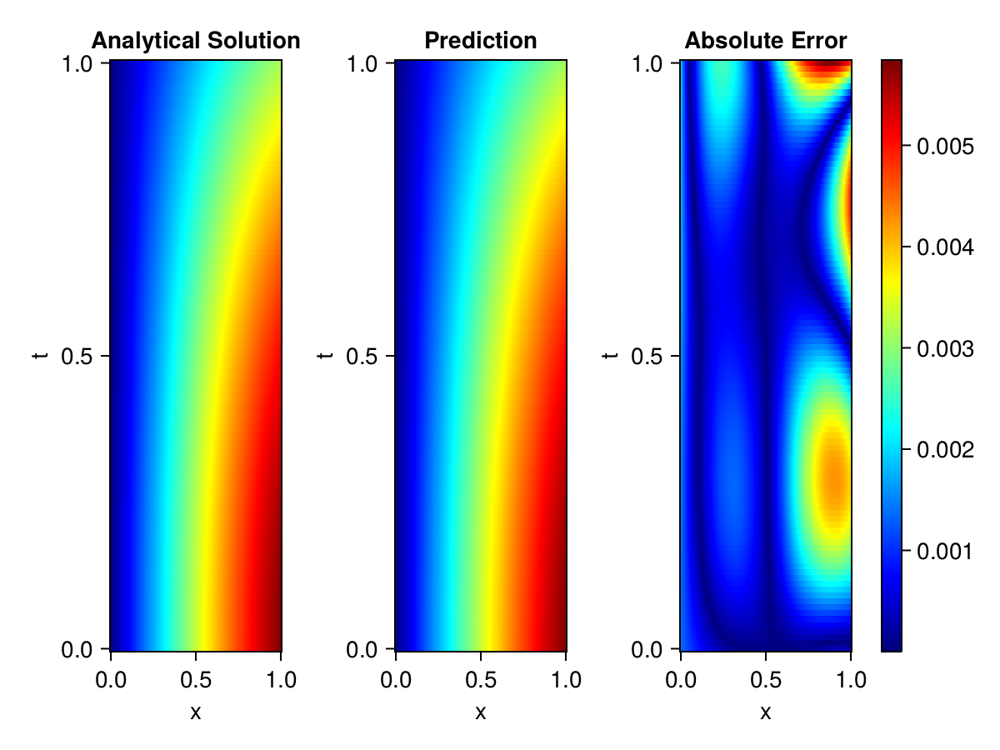
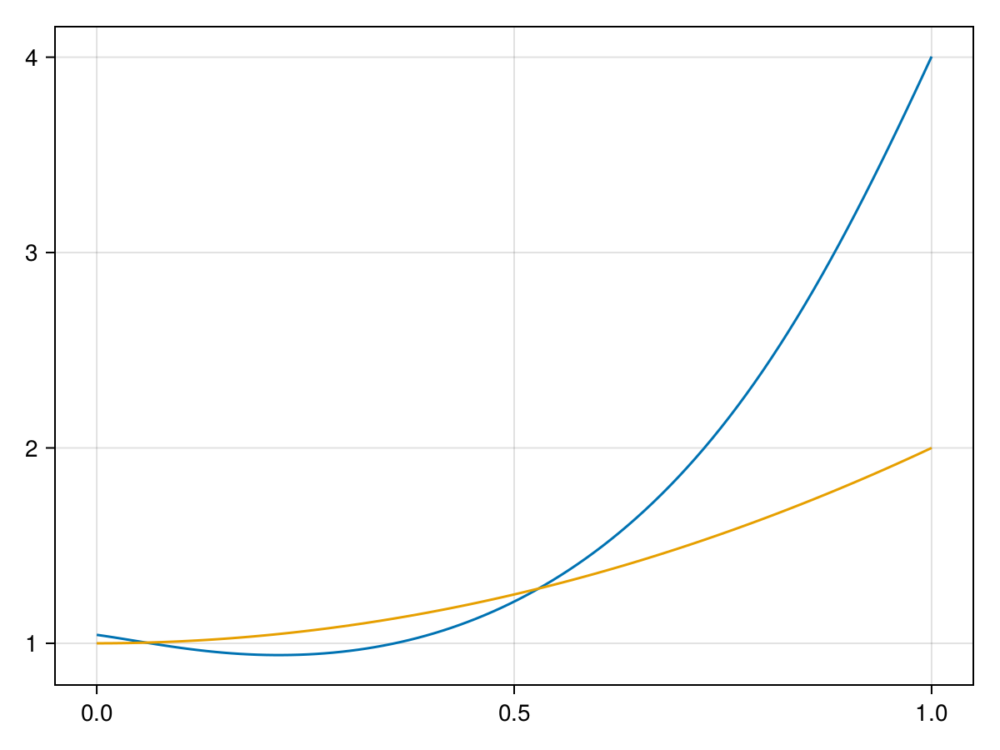

Inverse problem for the wave equation with unknown velocity field
We are going to sovle the wave equation.
using Sophon, ModelingToolkit, IntervalSets
using Optimization, OptimizationOptimJL, Zygote
@parameters x, t
@variables u(..), c(..)
Dₜ = Differential(t)
Dₜ² = Differential(t)^2
Dₓ² = Differential(x)^2
s(x,t) = abs2(x) * sin(x) * cos(t)
eq = Dₜ²(u(x,t)) ~ c(x) * Dₓ²(u(x,t)) + s(x,t)
bcs = [u(x, 0) ~ sin(x),
Dₜ(u(x, 0)) ~ 0,
u(0, t) ~ 0,
u(1, t) ~ sin(1) * cos(t)]
domains = [t ∈ Interval(0.0, 1.0),
x ∈ Interval(0.0, 1.0)]
@named wave = PDESystem(eq, bcs, domains, [t,x], [u(x,t),c(x)])\[ \begin{align} \frac{\mathrm{d}}{\mathrm{d}t} \frac{\mathrm{d}}{\mathrm{d}t} u\left( x, t \right) =& c\left( x \right) \frac{\mathrm{d}}{\mathrm{d}x} \frac{\mathrm{d}}{\mathrm{d}x} u\left( x, t \right) + \cos\left( t \right) \sin\left( x \right) \left|x\right|^{2} \end{align} \]
Here the velocity field $c(x)$ is unknown, we will approximate it with a neural network.
pinn = PINN(u = FullyConnected((2,16,16,16,1), sin),
c = FullyConnected((1,16,16,1), tanh))
sampler = QuasiRandomSampler(500,100)
strategy = NonAdaptiveTraining(1, (10,10,1,1))NonAdaptiveTraining{Int64, NTuple{4, Int64}}(1, (10, 10, 1, 1))Next we generate some data of $u(x,t)$. Here we place two sensors at $x=0.1$ and $x=0.5$.
ū(x,t) = sin(x) * cos(t)
x_data = hcat(fill(0.1, 1, 50), fill(0.5, 1, 50))
t_data = repeat(range(0.0, 1.0, length = 50),2)'
input_data = [x_data; t_data]
u_data = ū.(x_data, t_data)1×100 Matrix{Float64}:
0.0998334 0.0998126 0.0997503 0.0996464 … 0.275281 0.267213 0.259035Finally we construct the inverse problem and solve it.
additional_loss(phi, θ) = sum(abs2, phi.u(input_data, θ.u) .- u_data)
prob = Sophon.discretize(wave, pinn, sampler, strategy; additional_loss=additional_loss)
@showprogress res = Optimization.solve(prob, BFGS(), maxiters=1000)u: ComponentVector{Float64}(u = (layer_1 = (weight = [0.6051507515118578 0.9849833667985023; 0.5271469654723422 -0.013203080950032649; … ; -0.12363680040317898 -0.7894017254539546; -0.04369308657875927 0.21538981396331844], bias = [0.21262242729497632; 0.1424061173492614; … ; -0.14654498915642628; 0.17515146423292058;;]), layer_2 = (weight = [0.275567118392682 0.401878898862199 … -0.5305284722789325 0.017667932006639242; 0.5054860929629743 -0.2938615397070533 … 0.24848377282607473 0.15734161136314717; … ; 0.2022346389398559 -0.44030434015163694 … 0.8091019233712488 -0.44158420727696934; 0.25980575816087864 0.37971696226457785 … 0.5781758682522076 0.10108938047004175], bias = [-0.31761312651285833; 0.26281638895458714; … ; -0.05714546728086285; 0.16445294797645585;;]), layer_3 = (weight = [-0.24661575460624036 0.3284385233174839 … -0.008076900830735492 -0.08838419466348695; -0.18302610326598917 0.345422594895559 … 0.3721875222390016 0.3673835126168469; … ; 0.3603779841272454 -0.27694401733924273 … -0.004286543701020791 -0.5145355482147445; 0.35301857417847826 -0.40514790484794133 … 0.2734886432303217 -0.5220618547764948], bias = [0.6579325435544325; 0.01452238899982232; … ; 0.01684405268989337; -0.13329865122835535;;]), layer_4 = (weight = [-0.956287525280431 -0.36959814236852023 … 0.2747304152726846 0.40059343255221497], bias = [-0.0034974623005056284;;])), c = (layer_1 = (weight = [-0.6825963993993746; -1.141277431543193; … ; -1.0682803226640722; 2.6565861659114556;;], bias = [-0.056034652025211525; -0.07846131121598347; … ; 0.15520440670277774; 0.40400464028615773;;]), layer_2 = (weight = [0.02338550653801841 0.5346555115135551 … 0.7483793281680781 0.39939954692648305; -0.9491371247781792 -0.5699921290064752 … -0.5292512998016923 -1.212968573601152; … ; 0.18641692360680842 -0.5661413793209689 … -0.19195368126900159 0.1340615751794092; 0.20139029405740194 0.5905941789068629 … 0.5389587555590997 -0.8349141230275727], bias = [-0.11707441562677348; 0.0925256110983076; … ; 0.05083610487471485; -0.10152498077359026;;]), layer_3 = (weight = [-0.46054246483550004 2.153786769315993 … 0.8243830019878451 -0.23146095218499194], bias = [0.7900885869435355;;])))Let's visualize the predictted solution and inferred velocity
using CairoMakie
ts = range(0, 1; length=100)
xs = range(0, 1; length=100)
u_pred = [pinn.phi.u([x, t], res.u.u)[1] for x in xs, t in ts]
c_pred = [pinn.phi.c([x], res.u.c)[1] for x in xs]
u_true = [ū(x, t) for x in xs, t in ts]
c_true = 1 .+ abs2.(xs) |> vec
axis = (xlabel="x", ylabel="t", title="Analytical Solution")
fig, ax1, hm1 = heatmap(xs, ts, u_true, axis=axis; colormap=:jet)
ax2, hm2= heatmap(fig[1, end+1], xs, ts, u_pred, axis= merge(axis, (;title = "Prediction")); colormap=:jet)
ax3, hm3 = heatmap(fig[1, end+1], xs, ts, abs.(u_true .- u_pred), axis= merge(axis, (;title = "Absolute Error")); colormap=:jet)
Colorbar(fig[:, end+1], hm3)
fig
fig, ax = lines(xs, c_pred)
lines!(ax, xs, c_true)
fig